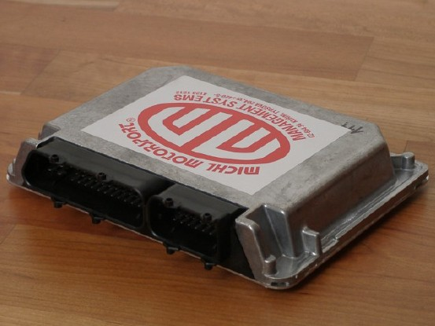
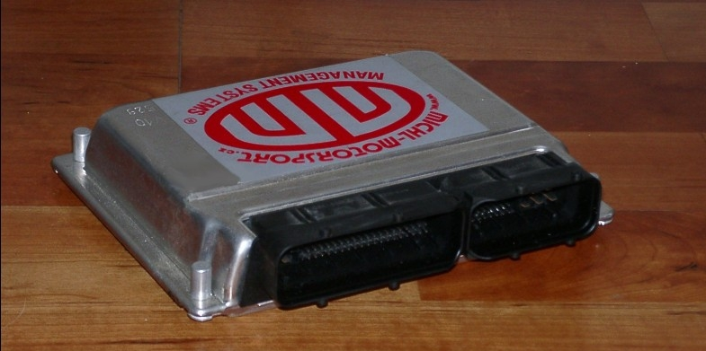
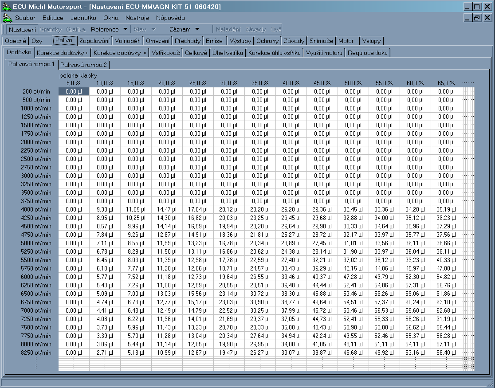
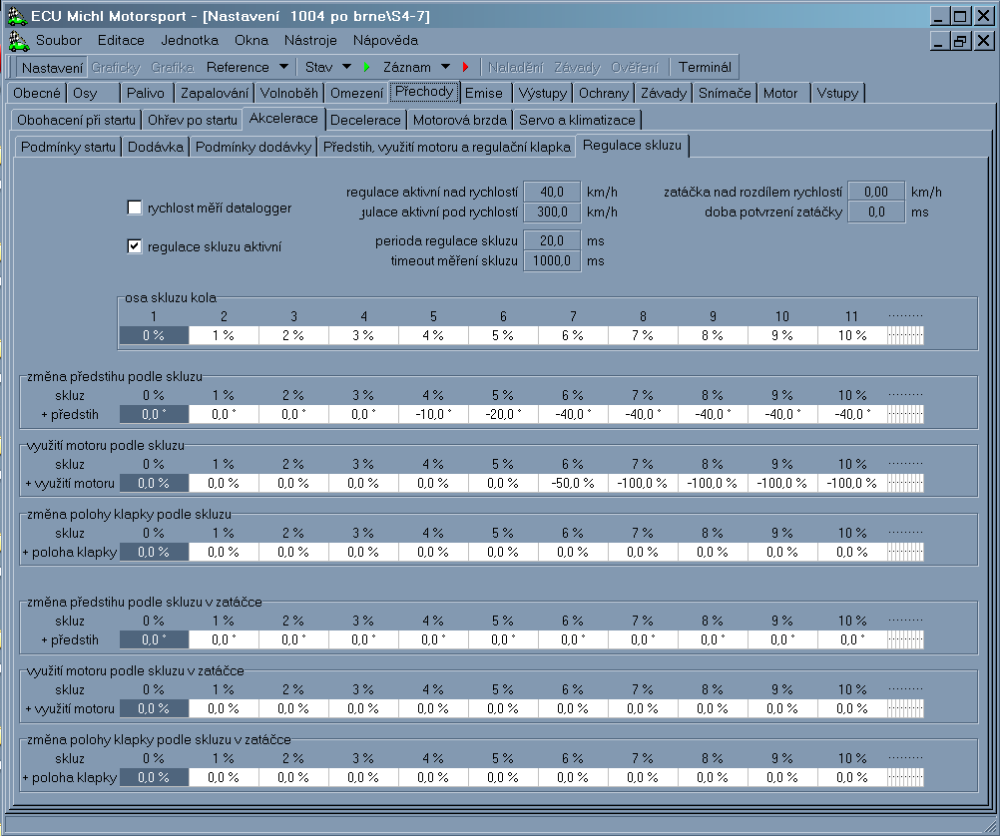

Elektronika
Jednotka ECU MM 4
Osvědčená technika pro běžné použití
Jednotka je
s úspěchem použitá na mnoha
motorech, vzhledem k
možnosti zabezpečení proti změně nastavení a
jednoduchosti kontroly nastavení vhodná pro
pohárové seriály.
Řídící jednotka je kompletně navržena
pro 16
bitovou technologii. Tuto podmínku splňuje jak procesor
Motorola
s 16 bitovou vnější sběrnicí tak i
použitý
firmware, který u tabulek počítá
také s 16
bitovou hodnotou. Připojovací konektor
vychází ze
standardního konektoru použitého u
řídících jednotek motorů
škoda/VW s obsahy
1.3, 1.6 a 1.8 l.
Řídící jednotka podporuje
následující prvky:
- až 6 nezávisle řízených budičů
zapalovacích cívek
- až 12 nezávisle
řízených vstřikovačů podporovány jsou
jak
saturované typy, tak peak&hold a je možná
i jejich
současná kombinace.
- nastavování vačkového
hřídele (Vanos) vypnuto/zapnuto
- regulační těleso volnoběhu
- regulátor
tlaku
paliva nebo alternativně změnu geometrie sacího
potrubí
- snímání lambda sondy (i
širokorozsahové)
- ohřev lambda sond
- výstup na otáčkoměr (úroveň 5V nebo
případně 12V)
- přepouštěcí ventil aktivního
uhlí
- ovládání palivového
čerpadla
- dva
víceúčelové
výstupy/výstupy
programovatelné podle potřeby. Jako příklad
můžeme
uvést např.:
- signalizace optimálních podmínek pro
řazení
- krátkodobé
snížení dodávky paliva na impuls od
sekvenční převodovky
- připojení
záznamového zařízení,
diagnostického
panelu nebo elektronické palubní desky
pomocí
komunikační linky RS232
- snímače polohy motoru
- snímač kliky a pro plně sekvenční vstřik i
snímač vačky / je možné použít Hallovy
i indukční snímače
- snímač objemu vzduchu
procházejícího sacím
potrubím
- snímač tlaku vzduchu v sacím potrubí
- snímač teploty chladícího
média
- snímač teploty nasávaného vzduchu
- podpůrné
snímače (libovolný vstup je možné
nahradit jinou
veličinou a tu zahrnout do regulačních nebo
záznamových algoritmů). Proto je uvedena jako
příklad pouze jedna z možných
konfigurací:
- teplota oleje
-tlak oleje
- teplota paliva
- tlak paliva
- barometrický tlak vzduchu
- teplota hlav
Základní koncepce
řídící jednotky
počítá s úplně
nezávislým
řízením každého budiče
zapalovaní i budiče
vstřikovačů. Základní parametry pro tyto prvky
jsou:
budič
zapalovaní
předstih
a doba
nabíjení zapalovací cívky
jedna
sada základního nastavení
vstřikovač
doba
vstřiku a úhel začátku vstřiku
dvě sady
základního nastavení
(vstřikovací
rampa 1 a 2)
typ
vstřikovače (saturovaný / peak&hold)
S ohledem na jednodušší postup
nastavování je vždy
základní
nastavení společné pro jednotlivé
prvky a to se
vždy koriguje individuální korekcí
prvku. U
vstřikovačů je podporována varianta dvou
odlišných
sad 1 a 2.
Při ladění motoru je možno využívat
speciálního zařízení pro
analogové
nastavování požadovaných parametrů a
to jak pro
jednotlivé válce tak pro skupiny válců.
S ohledem na rozdílné podmínky na
závodní trati je podporováno až 6
alternativních nastavení
řídící
jednotky. Konkrétní varianta je
volitelná
přepínačem podle specifických požadavků
zákazníka.
Parametry jsou ukládány jako
dvourozměrné tabulky
s prostorovou interpolací. Jednou osou jsou
otáčky
motoru, druhá má tři
přepínatelné
alternativy:
* množství nasávaného vzduchu
* tlak v sacím potrubí
* poloha škrtící klapky
Technické parametry regulačního
systému motoru
Celý systém motoru je řízen na
základě
úhlového systému s periodou
720°. Pozice
0° odpovídá horní
úvrati při
zapálení směsi ve válci. Pokud
není motor
vybaven snímačem vačky, není možno určit zda se
jedná o lichou nebo sudou otáčku kliky.
Systém si
v tomto případě sám náhodně podle
polohy
kliky při startu zvolí, která otáčka
je lichá.
Konfigurace snímačů polohy natočení motoru, typy
vstřikovačů a jejich přiřazení ke vstřikovacím
rampám a pořadí zapalování
je určeno
variantou programu. Pro jinou konfiguraci motoru je nutné do
řídící jednotky nahrát
jiný program.
Jednotka ECU MM 5
Řídící jednotka používá 32bitový procesor PowerPC. Pro paměť programu a kalibrací je k dispozici celkem 1MB paměti, která je součástí čipu procesoru. Pro záznam přechodných dějů a změny nastavení při ladění během chodu motoru je osazena paměť RAM 512KB. Pro záznam závad a událostí je určena paměť EEPROM s kapacitou od 32KB do 256KB. Záznamy používají pro určení časového okamžiku interní hodiny reálného času. Tyto hodiny jsou také využívány pro omezení doby chodu jednotky. Časování veškerých výstupů se provádí s rozlišením a přesností 1ms.
Výstupy jsou řešeny jako obecné s programovým připojením konkrétního výstupu ke zvolené funkci.
Jednotka je vybavena:
• 2 kompletními můstkovými výstupy s proudovou zatížitelností 3A
• 12 rychlými spínači na 0V s proudovou zatížitelností 2A primárně určené na vstřikovače.
• 8 univerzálními spínači na 0V s proudovou zatížitelností 1A
• 8 univerzálními spínači na 0V s proudovou zatížitelností 0,5A
Jednotka je schopna ovládat až 12 vstřikovačů peak&hold. V případě saturovaných vstřikovačů je tento počet až 16. Zapalovaní řídí až 8 externích výkonových budičů. Na přání lze doosadit další dva budiče pro použití na 10 válcových motorech.
Jednotka je osazena 40 analogovými vstupy. Opět je možné přiřadit konkrétní vstupy k požadované funkci programově. Některé vstupy mají kromě toho speciální HW výbavu:
• 8 vstupů se používá jako impulsní vstupy pro snímání polohy kliky a vačky. Zbývající impulsní vstupy je možné využít pro snímače rychlosti kol vozidla a následně i výpočet prokluzu kol.
Programově se přepíná režim indukční/Hallův snímač.
• 2 vstupy jsou určeny pro snímače s nízkým odporem čidla
• 2 vstupy mají rozhraní pro UEGO lambda sondu.
• 2 vstupy jsou optimalizovány pro snímače klepání
• 26 vstupů je možné osadit pullupovými odpory pro odporové snímače.
Komunikace s vnějšími zařízeními se provádí po dvou sériových linkách a po dvou sběrnicích CAN.
Jednotka používá shodnou filosofii nastavení, jako předchůdce ECUMM4, její schopnosti byly ale rozšířeny mimo již výše uvedené také o následující funkce:
* možnost řízení motorů s přímým vstřikováním FSI, TSI za použití externího vysokonapěťového budiče (až 6 válců)
* plynulá regulace tlaku paliva se zpětnou vazbou
* měření rychlosti až 6 kol a možnost kontroly prokluzu hnaných kol
* nezávislé spínání ochran motoru a jiných vnějších spotřebičů (ventilátory, čerpadla)
* dva nezávislé vstupy pro řízení přerušení při řazení (páka, automat)
* dvě nezávislé plynulé regulace časování vačkových hřídelů se zpětnou vazbou
* vysílání datových zpráv s informacemi o stavu motoru a jednotky po CAN busu, kompatibilní s dipleji AIM
* možnost příjmu datových zpráv o rychlostech kol z ABS
* ovládání elektronické škrtící klapky elektronickým pedálem


Kontakty:
+420 5 41 42 43 44
PO - PÁ 7:30 - 17


Circuit Board Image by Michael Schwarzenberger from Pixabay
© Michl Motorsport 2025. All rights reserved. | Photos by jAnina michlová
Minulá verze webové stránky se nachází na old.michl-motorsport.cz